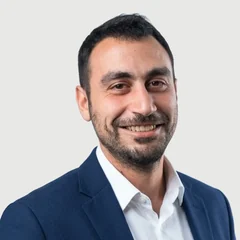

נשמע מוכר?
אם אחד מהמשפטים האלה נשמע מוכר, כנראה שיש כאן משהו שצריך סדר.
- העסק לא גדל כבר שנה, למרות שכולם עובדים קשה.
- יש שלוש אפשרויות על השולחן, ואין רגע שקט לחשוב על אף אחת מהן.
- כל החלטה עוברת דרכי, והצוות מחכה לי.
- גייסתי עוד עובד, ולא הרגשתי שום הקלה.
- ברור לי שצריך לשנות משהו גדול. פחות ברור מה.
כאן מבט מבחוץ עושה את ההבדל.
מישהו שמכיר עסקים קטנים, יודע לשאול את השאלות הנכונות, ומחזיק אתכם עד שהשינוי הופך לתנועה בפועל.

מה לקוחות אומרים
"סדר ושקט נפשי!"
התחלתי ליווי עם יונתן לפני שנתיים, כי בעקבות גדילה משמעותית של העסק התחלתי קצת לאבד שליטה. הגיעו הרבה מורכבויות נוספות, כמו ספקים, לקוחות ותשלומים, ולא ידעתי איך להתמודד איתם נכון. יונתן יודע לשאול את השאלות הנכונות ולעשות סדר, כי המידע כבר שם, אבל לדעת לעבד אותו נכון זה מה שהופך ניהול עסק לעבודה פשוטה ולא לסיוט מתמשך. היום אני לא מנחש יותר החלטות, אלא מבצע שיקולים עסקיים נכונים ומדויקים לי.
אני חושב שכל עסק שיודע מה הוא רוצה לעשות ולא מצליח להגיע לנקודה שהוא יכול להגיע אליה, צריך לדבר עם יונתן. כמה פגישות, ואתם כבר תהיו במקום אחר.
מתחילים בשיחה קצרה, ואז שעה אחת.
לתיאום פגישת התאמהסדר, החלטה, ביצוע: כך נראה הליווי
תוך כ-3 חודשים מתקבלת תמונה ברורה של המצב, צווארי הבקבוק המרכזיים, וההחלטות שצריך לסגור. לרוב, ליווי של חצי שנה נותן את המרחב הנכון לעבודה משמעותית.
-
פגישת התאמה ללא עלות
שיחת טלפון קצרה, ואז פגישה של שעה פנים אל פנים, אצלכם בעסק או במשרד שלי בראשון לציון. בודקים אם יש התאמה, מחדדים את האתגר, ומבינים מה באמת צריך לקרות.
-
סדר: מיפוי
נכנסים לעומק: מספרים, תהליכים, אנשים, לקוחות. המטרה היא לזהות מה עוצר את העסק, ומה רק יוצר רעש.
-
החלטה: תוכנית עבודה
מגדירים 2–3 עדיפויות, יעדים מדידים ואחריות ברורה. יוצאים עם תוכנית עבודה קצרה, כתובה ויישומית.
-
ביצוע: ליווי שבועי
פגישה שבועית של 90 דקות, פנים אל פנים או בזום, עם סיכום קצר אחרי כל פגישה וטבלת מעקב משותפת שמתעדכנת מדי חודש. בין הפגישות אני זמין בוואטסאפ לאורך השבוע. כשזה מתאים, משלבים גם AI כדי לחסוך זמן ולשפר תהליכים, בלי צורך בידע טכני.

הנושאים שבדרך כלל עוצרים עסקים טובים מלהתקדם
על כל שאלה כזאת יוצאים עם החלטה ברורה וצעד ראשון ליישום.
- להעלות מחירים, או להוסיף שירות חדש?
- לגייס עוד עובד, או קודם לסדר את מה שיש?
- להתרחב לתחום חדש, או להעמיק במה שכבר עובד?
- איך מפסיקים להיות צוואר הבקבוק של העסק?
- איך מפסיקים לנהל את העסק מהראש בלבד?
- איפה AI באמת חוסך זמן, ואיפה הוא רק מסיח?
- על מה להפסיק לבזבז זמן וכסף?
מה לא תקבלו ממני
- דוח של 80 עמודים שאף אחד לא יקרא.
- תבנית מוכנה שמתאימה לכל עסק, ולכן לאף אחד.
- ייעוץ שמחליף אתכם, במקום לעבוד איתכם.
ומה כן
תוכנית עבודה כתובה, טבלת מעקב חודשית, סיכום אחרי כל פגישה, וליווי צמוד ביישום.
למי זה מתאים
מתאים במיוחד אם אתם כבר עובדים, ורוצים לעבוד חכם יותר.
מתאים אם
- העסק כבר עומד על הרגליים, ואתם רוצים לעלות ליגה.
- הצמיחה נתקעה, ואתם מרגישים שהעסק יכול יותר.
- יש החלטה גדולה על השולחן, ואתם רוצים לחשוב עליה נכון.
- אתם מוכנים להקדיש זמן קבוע לעבודה על העסק, לא רק בתוכו.
פחות מתאים אם
- אתם מחפשים פתרון מהיר לחודש הקרוב.
- אתם רוצים שמישהו יעשה את העבודה במקומכם.
- כרגע אין לכם זמן או ראש לעבודה מסודרת על העסק.
נשמע כמו העסק שלכם?
לתיאום פגישת התאמהשאלות נפוצות
מה שחשוב לדעת לפני השיחה הראשונה.
מה קורה בפגישת ההתאמה?
קודם שיחת טלפון קצרה של 15 דקות, כדי להבין אם יש התאמה. אחריה פגישה של שעה פנים אל פנים, אצלכם בעסק או במשרד שלי בראשון לציון. מדברים על העסק, על מה שתקוע ועל מה שאתם רוצים להשיג, ויוצאים עם סדרי עדיפויות ברורים, גם אם מחליטים לא להמשיך. שווי הפגישה 750 ₪, והיא ללא עלות וללא התחייבות.
כמה זמן נמשך הליווי?
לרוב, תוך כ-3 חודשים כבר רואים תמונה ברורה יותר של המספרים, צווארי הבקבוק וההחלטות. ליווי של חצי שנה נותן את המרחב הנכון לעבודה עמוקה. נפגשים פעם בשבוע ל-90 דקות.
נפגשים פנים אל פנים או בזום?
מתחילים בשיחת טלפון קצרה. פגישת ההתאמה היא פנים אל פנים, אצלכם בעסק או במשרד שלי בראשון לציון. בהמשך אפשר לשלב גם זום או מפגש בבית קפה, לפי מה שנוח.
לא בטוחים עדיין מה העסק צריך?
בדיוק בשביל זה יש את פגישת ההתאמה: להבין יחד מה באמת צריך, לפני שמתחייבים למשהו.
צריך ידע טכני כדי לשלב AI?
לא. אם יש מקום שבו AI יכול לחסוך זמן או לשפר תהליך, משלבים אותו בצורה פשוטה, צעד אחרי צעד.
כמה זה עולה?
המחיר נקבע אחרי פגישת ההתאמה, לפי היקף העבודה שהעסק צריך. מקבלים הצעת מחיר בכתב לפני שמתחייבים.
איך עובד התשלום?
תשלום חודשי, בתחילת כל חודש, עבור אותו חודש. אין תשלום מראש על כל התהליך.
אפשר לעצור באמצע?
כן. אפשר להפסיק בסוף כל חודש. על חודש שכבר שולם אין החזר.
מה לגבי סודיות?
כל מה שעולה בליווי נשאר בינינו. אם צריך, חותמים על הסכם סודיות (NDA).
אתה עובד גם עם מתחרים שלי?
לא. אני לא מלווה במקביל שני עסקים שמתחרים ישירות זה בזה.

יונתן סברנסקי, יועץ אסטרטגי-תפעולי לעסקים קטנים
אני מלווה בעלי עסקים קטנים, בעיקר סטודיואים, עסקי חינוך והדרכה ועסקי טכנולוגיה. העבודה שלי מתחילה בסדר: במספרים, בתהליכים, ובהבנה מה באמת עוצר את העסק. משם עוברים להחלטות, ואז ליישום שבועי שמחזיק את התנועה.
אני עובד עם בעלי עסקים שלא צריכים עוד רעיונות, אלא בהירות, סדר, וליווי שמחזיק את הביצוע.
הוכחת יכולת
העבודה שלי עוזרת לבעלי עסקים להפוך בלבול, עומס וצווארי בקבוק לסדר, החלטות ותנועה עסקית ברורה. בפועל, זה יכול להיראות כך:
- עלייה משמעותית במחיר בלי לפגוע בסגירות
- צמיחה במחזור
- שיפור בשליטה הניהולית
- חזרה למיקוד ולתוכנית עבודה ברורה
לדוגמה, בעסק אימון פוקר: המחיר לשעה עלה מ־300 ל־850 ₪, המחזור השנתי גדל מ־350 אלף ל־800 אלף ₪, והעסק ממשיך להתקדם לעבר יעד של 2 מיליון ₪.
אם יש החלטה חשובה על השולחן, נתחיל משיחה קצרה
כתבו לי כמה מילים על העסק ועל מה שתקוע. אחזור אליכם עוד באותו יום לשיחה קצרה, ואם יש התאמה, נתאם פגישת התאמה של שעה.